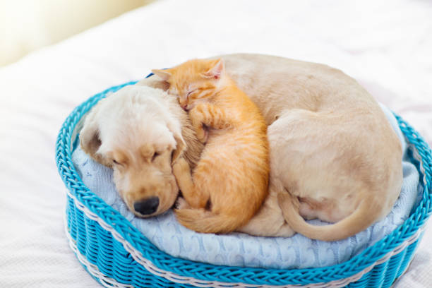

Olá,
Bem vindo a Patas & Pelos
Um mundo pensado no ritmo deles.

Um mundo pensado no ritmo deles.
A Patas & Pelos nasceu para ser parceira de quem ama e cuida de seus parceiros de quatro patas. Sabendo como funciona a rotina dos tutores nossa empresa foi fundada para ser um ponto de apoio e de confiança onde você pode encontrar tudo que seu pet precisa unindo praticidade carinho e responsabilidade em um so local
Seja para grantir a ração um novo brinquedo favorito agendar o banho e tosa ou achar um local hotelzinho seguro onde você pode viajar com tranquilidade sabendo que seu pet estará sendo bem cuidado e em segurança
Além do bem estar do seu pet a Patas & Pelos oferece informações e faz a ponte ligando os animais abandonados a novos tutores prontos para cuida-los e ama-los da forma que cada pet merece
